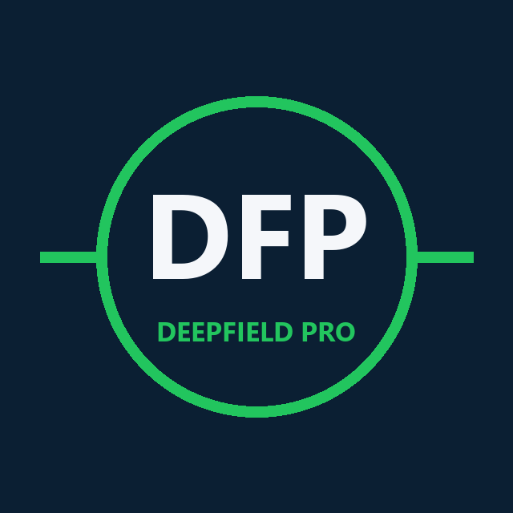

DeepFieldProOur model compares bookmaker odds with sharp-market (Pinnacle) fair odds and flags prices that look too generous. Every pick is logged before kickoff and graded automatically — wins and losses.
A Dixon-Coles model rates every team and turns it into fair odds for each outcome.
Pinnacle's prices are the sharpest in football. We flag picks where a bookmaker pays more than they're worth.
Each pick is recorded before kickoff and settled from the real score. Nothing gets deleted.
278W / 368L
Settled picks since July 2026 — mostly at odds of 2.5 or more, so more losses than wins is normal
+29%
Return per pick at a flat 1-unit stake
83%
Of picks priced better than the market's closing line
Snapshot of 29 Oct 2026. Paper-traded results from our own ledger, not real-money bets. The live record — every pick, win or lose — is always in the bot: send /history to @Deepfieldpro_bot. A few hundred picks is still a small sample; past results do not guarantee future returns.
$0
$5 / month
No. Nobody honest can. Most picks are at odds above 2.5, so they lose more often than they win, and losing weeks happen. We publish every result so you can judge the record yourself.
No — they are paper-traded: each pick is logged at the price available when it was made and graded from the real score.
Open @Deepfieldpro_bot, tap Subscribe via Binance Pay, pay 5 USDT, then send /confirm with your Binance Pay order ID. Access is activated after the payment is checked.
Only money you can afford to lose. VIPs tell the bot their balance and get a stake per pick, capped at 2% per pick and 10% in total.